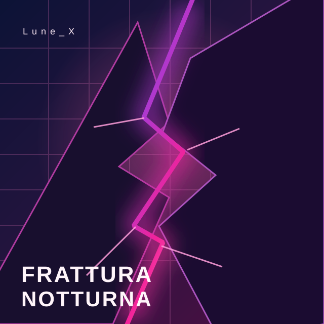
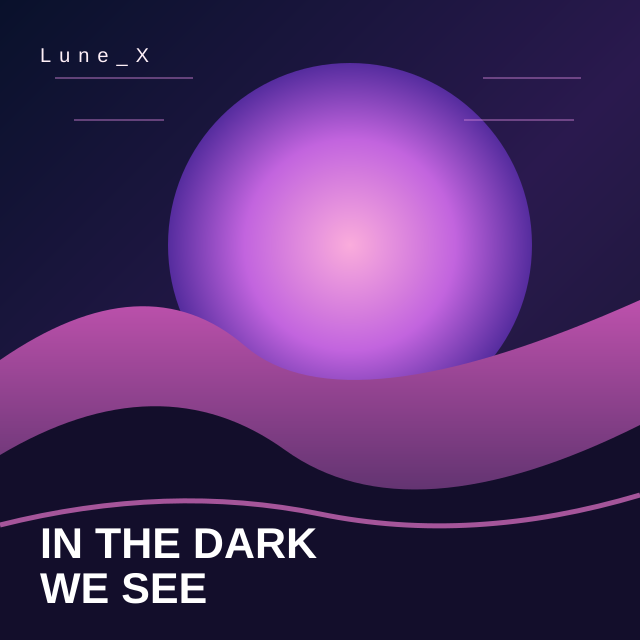
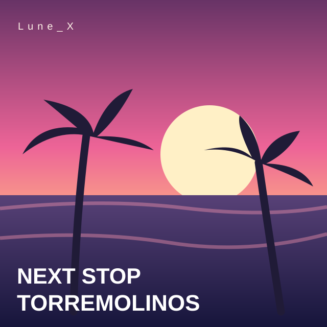

Frattura Notturna
Avance de 28 segundos
Tres canciones para descubrir el universo de Lune_X, desde la noche hasta el Mediterráneo

Avance de 28 segundos

Avance de 28 segundos

Avance de 28 segundos
Estos son tres fragmentos promocionales oficiales de 28 segundos. Puedes escucharlos aquí. Para escuchar las canciones completas, visita los perfiles musicales oficiales